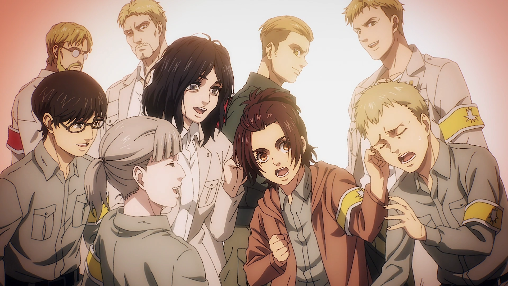

Warriors

About the Warriors
The Warriors are an elite military unit formed by Marley, consisting of Eldian children selected through a special program to inherit the power of the Titans. Their main purpose is to serve Marley by using their Titan abilities in military operations and conflicts against other nations. The Warrior program offers Eldian families the possibility of becoming Honorary Marleyans, granting them certain privileges in exchange for their children's service. However, the candidates are raised under strict military expectations and are taught to demonstrate loyalty to Marley. Selected candidates are trained from a young age and compete for the opportunity to inherit one of the Nine Titans. Those who succeed become Warrior Unit members, while their families receive the status associated with their service. Titan powers are inherited through a process that also places a limited lifespan on their holders. One of the most important missions carried out by the Warriors was the operation to infiltrate Paradis Island and recover the Founding Titan. During this mission, Reiner Braun, Bertholdt Hoover and Annie Leonhart were sent to live among the people inside the Walls while hiding their true identities. Other notable members and candidates include Zeke Yeager, Pieck Finger, Porco Galliard, Gabi Braun and Falco Grice. The Warriors play a significant role in Marley's military power and in the conflict between Marley and Paradis, representing the complicated relationship between the Eldian people and the nation that controls them.